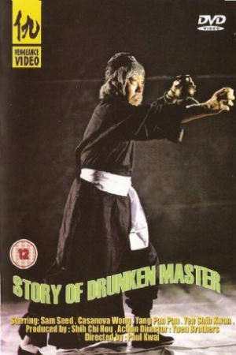
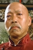

Also known as:醉俠蘇乞兒 (original title)
Country:Hong Kong, 90 minutes
Spoken languages:Cantonese
Genres:Action
Director(s):Ngai Hoi-Fung, Wu Pang
Writer(s):Ngai Hoi-Fung, Leung Cho
Video Codec:Unknown
Number: 2734


Certification:
Storyline:
Beggar So is trying to keep his two star students, brother and sister team Cheong and Gam Fa, in line and well-trained. But So's old enemy Grasshopper Bill Chan and his brother Cougar cause trouble. Bill helps young Kai to be pledged in marriage to Gam Fa against her wishes, but actually plans to have her for himself.
Cast: 

Medium: Original DVD,
Comments: Part of: The Martial Arts Essentials Volume 6 - Drunken Masters
Loaned: No
Aspect ratio: Unknown